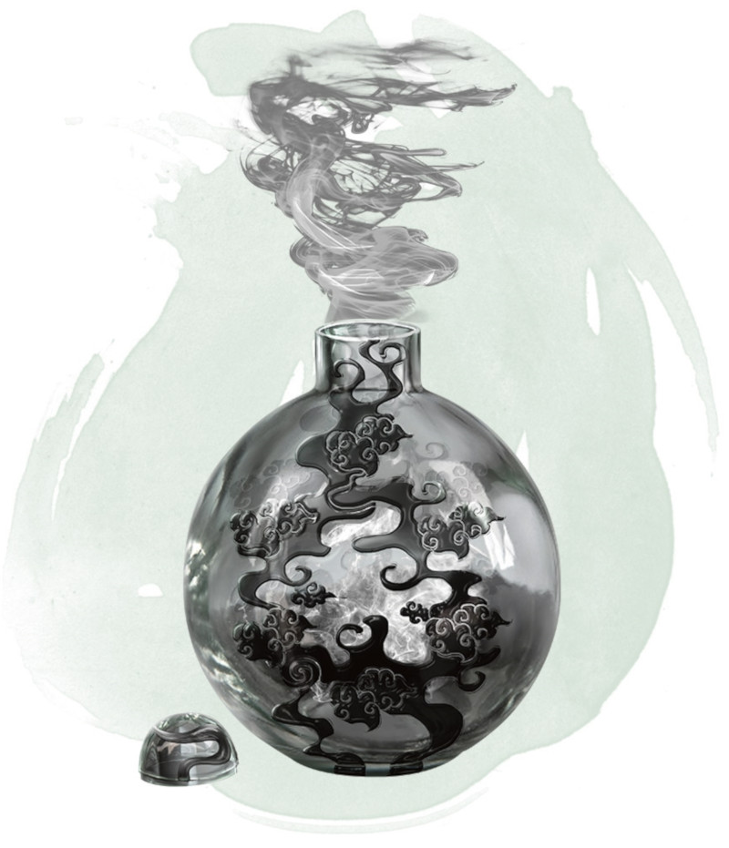

Bouteille fumigène
[ Eversmoking Bottle ] [ Urne fumigène ]
Objet merveilleux, peu commun
De la fumée s'échappe de l'orifice de cette bouteille en laiton fermée par un bouchon de plomb. La bouteille pèse 500 grammes. Lorsque vous utilisez votre action pour enlever le bouchon, un épais nuage de fumée s'échappe de la bouteille dans un rayon de 18 mètres. La zone a une visibilité nulle. Chaque minute que la bouteille reste ouverte tout en étant dans le nuage, le rayon augmente de 3 mètres jusqu'à atteindre un rayon maximum de 36 mètres.
Le nuage reste en place aussi longtemps que la bouteille est ouverte. Fermer la bouteille nécessite que vous prononciez le mot de commande en utilisant une action. Une fois que la bouteille est refermée, le nuage se disperse en 10 minutes. Un vent modéré (16 à 30 kilomètres par heure) peut également disperser la fumée en 1 minute, et un vent fort (plus de 30 kilomètres par heure) peut disperser le nuage un 1 tour.
Le nuage reste en place aussi longtemps que la bouteille est ouverte. Fermer la bouteille nécessite que vous prononciez le mot de commande en utilisant une action. Une fois que la bouteille est refermée, le nuage se disperse en 10 minutes. Un vent modéré (16 à 30 kilomètres par heure) peut également disperser la fumée en 1 minute, et un vent fort (plus de 30 kilomètres par heure) peut disperser le nuage un 1 tour.
Dungeon Master´s Guide (SRD)
